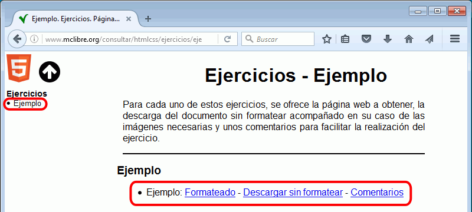
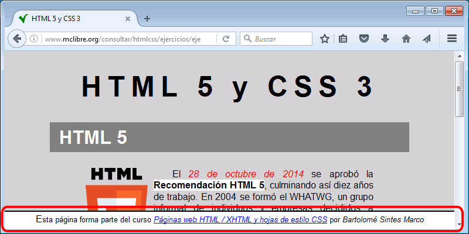
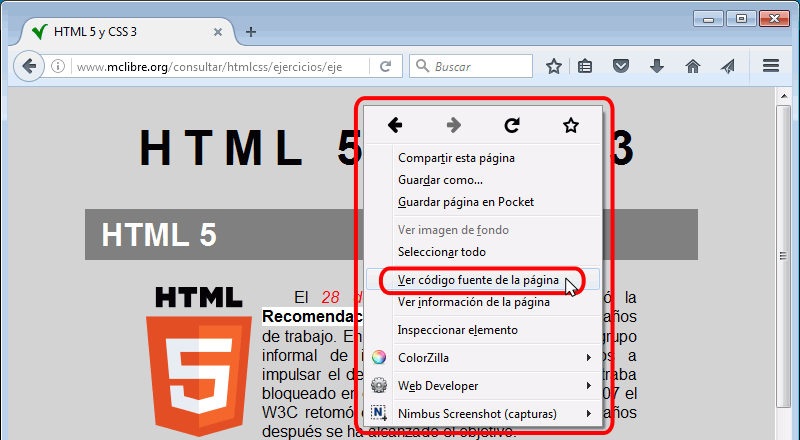
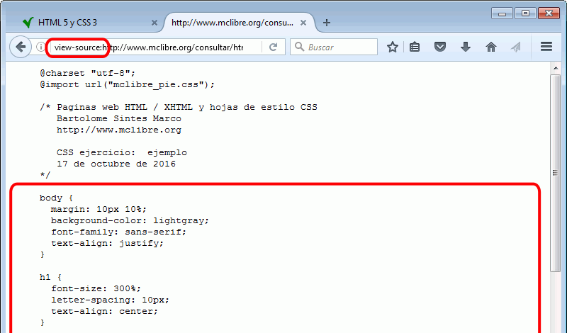

Material proporcionado
La mayoría de ejercicios consisten en obtener una página completamente formateada a partir del texto de la página sin etiquetas y las imágenes. El material que se proporciona en cada ejercicio, al que se accede con tres enlaces, es el siguiente:
- Formateado: La página web que se debe reproducir.
- Descargar sin formatear: Un archivo comprimido que contiene la(s) página(s) web sin formatear (el texto sin etiquetas html) y, en su caso, la(s) imágene(s) necesarias.
- Comentarios: Una página de comentarios sobre el ejercicio.

A partir de la página web sin formatear, el alumno debe:
- añadir a la página web todas las etiquetas necesarias
- crear una hoja de estilo y escribir todas las sentencias necesarias
Se aconseja empezar añadiendo las etiquetas e imágenes en la página web y después dar las propiedades de estilo, pero se puede ir alternando entre las dos tareas, a elección del alumno.
En el apartado siguiente de esta lección se detallan los pasos a realizar para resolver un ejercicio.
Se aconseja al alumno que en un primer momento intente realizar el ejercicio sin consultar la página de comentarios ni consultar el código fuente de la página a reproducir.
Si no es capaz de resolverlo, consulte la página de comentarios que le dará pistas sobre las etiquetas y propiedades de estilo utilizadas.
Si aún así no es capaz de resolverlo, consulte el código fuente de la página formateada.
Se puede considerar que se ha completado completamente un ejercicio cuando las páginas de muestra y la del alumno tienen un aspecto idéntico en el navegador, pero se pueden admitir pequeñas diferencias, como por ejemplo que dos distancias o tamaños sean ligeramente diferentes.
En algunos ejercicios habrá que comparar las páginas para diferentes tamaños de ventana.
Como en muchos casos se pueden conseguir los mismos resultados de varias maneras, se aconseja consultar el código fuente de la página formateada y suhoja de estilo.
Nota:
- En el examen, se admitirán como válidas pequeñas diferencias entre las páginas de muestra y la del alumno en lo que respecta a tamaños, distancias o colores.
- En el examen, cuando un resultado se pueda conseguir de varias maneras, se admitirán como válidas todas ellas.
Los ejercicios incluyen en la parte inferior un enlace a la página principal de los apuntes que no es necesario reproducir al hacer los ejercicios:

Para ver el código fuente de una página, haga clic derecho sobre el texto de la página (no sobre las imágenes) y elija la opción "Ver código fuente de la página" o utilice el atajo de teclado Ctrl+U.

Se abrirá una pestaña mostrando el código fuente de la página formateada (es decir, la mitad de la "solución" del ejercicio). Para ver la hoja de estilo, haga clic en el enlace a la hoja de estilo.

En la misma pestaña se mostrará la hoja de estilo (es decir, la otra mitad de la "solución" del ejercicio).

Nota: En el examen, el alumno tan sólo dispondrá de capturas de pantalla, no dispondrá de página de comentarios ni podrá acceder al código fuente.